Warning: Number of logged events: 6553 Demography Informal Methods Seminar - Lasso and Regularized Regression
3.1 Regularization in Regression
I would suggest you read Chapter 6 and especially section 6.2 of An Introduction to Statistical Learning to get a full treatment of this topic.
If you want to read the sources for the Lasso, check out the paper by Friedman, Hastie and Tibshirani (2010)
Why do I want to talk about this? The Lasso and regularization are a popular technique in data science today that allows you to perform both variable selection and optimized prediction in one algorithm. It also can alleviate some problems of multicollinearity between predictors. The Lasso can be applied to linear, generalized linear, generalized linear mixed models and the Cox model, and there are R packages that provide this functionality.
We will first have a look at the linear model solution and extend it.
4 The good ol’ (generalized) linear model
4.0.1 Linear regression
The standard linear regression can be written:
\[\hat y = \hat \beta_0 + \sum {\hat \beta_k x_{ik}}\]
where the terms on the right correspond to the linear predictor for the outcome (\(y\)), given the values of the predictors (\(x_k\)). The \(\hat \beta\) values are the unbiased estimates of the regression parameters, for the linear model, typically found by least squares estimation.
4.0.2 Generalized linear model
Extension of the linear modeling concept to non-Gaussian outcomes.
Link function \(\eta\) links the mean of the outcome to a linear predictor with a nonlinear function \(\eta\)
E.G. Logistic regression -
\[log \left( \frac{p_i}{1-p_i} \right ) =\eta_i = \sum {\beta_k x_{ik}}\] To get the probability from the model, we use the inverse logit transform: \[p_i = \frac{1}{1+exp^{\eta}}\]
4.0.3 Model estimation
Find the parameters of the model so that the model Deviance is minimized. In the linear regression context, Deviance is the same as the Residual Squared Error or Residual Sums of Squares
\[\text{Deviance} = \sum (y_i - \sum{\hat{\beta_k x_{ik}}}) ^2 \]
The problem is when there are parameters in the model that are zero or nearly zero, the model may have higher deviance than it could if some of those parameters were not in the model.
The question is how to go about doing this?
You may have seen methods of regression subsetting via step-wise, forward or backward selection. These methods iteratively insert or remove predictor variables from the model, and in this process the models are scored via either their RSS or AIC or some other information criteria.
Here is an example where we fit a linear model and the perform variable subset selection.
Attaching package: 'dplyr'The following objects are masked from 'package:stats':
filter, lagThe following objects are masked from 'package:base':
intersect, setdiff, setequal, unionA common data science approach would be to fit a model with all predictors included, and then winnow the model to include only the significant predictors. We start with this type of model:
library(MASS)
Attaching package: 'MASS'The following object is masked from 'package:dplyr':
selectX<-scale(model.matrix(e0total~. , data=prb2))
dat<-data.frame(X[,-1])
dat$y<-prb2$e0total
fm<-glm(y~., data=dat)
summary(fm)
Call:
glm(formula = y ~ ., data = dat)
Coefficients:
Estimate Std. Error t value Pr(>|t|)
(Intercept) 67.92823 0.12698 534.971 < 2e-16 ***
continentAsia 0.07157 0.20830 0.344 0.7315
continentEurope 0.30523 0.31084 0.982 0.3274
continentNorth.America 0.39315 0.20707 1.899 0.0592 .
continentOceania -0.01689 0.18184 -0.093 0.9261
continentSouth.America 0.25909 0.16774 1.545 0.1242
population. -0.11564 0.13747 -0.841 0.4013
cbr -7.63321 3.27526 -2.331 0.0209 *
cdr -2.49192 1.35854 -1.834 0.0682 .
rate.of.natural.increase 6.35159 2.96452 2.143 0.0335 *
net.migration.rate 0.40225 0.21826 1.843 0.0670 .
imr -1.95409 0.46124 -4.237 3.59e-05 ***
womandlifetimeriskmaternaldeath -0.14192 0.21280 -0.667 0.5057
tfr 1.70252 0.88000 1.935 0.0546 .
percpoplt15 -1.49235 0.78074 -1.911 0.0575 .
percpopgt65 3.22310 0.45094 7.147 2.04e-11 ***
percurban -0.07495 0.24817 -0.302 0.7630
percpopinurbangt750k 0.25774 0.23574 1.093 0.2757
percpop1549hivaids2007 -1.46179 0.27608 -5.295 3.39e-07 ***
percmarwomcontraall 0.09475 0.35654 0.266 0.7907
percmarwomcontramodern 0.51559 0.31250 1.650 0.1007
percppundernourished0204 -0.35021 0.20687 -1.693 0.0922 .
motorvehper1000pop0005 0.12798 0.31529 0.406 0.6853
percpopwaccessimprovedwatersource 0.44684 0.26913 1.660 0.0986 .
gnippppercapitausdollars 0.64204 0.33277 1.929 0.0552 .
popdenspersqkm -0.20223 0.21277 -0.950 0.3431
---
Signif. codes: 0 '***' 0.001 '**' 0.01 '*' 0.05 '.' 0.1 ' ' 1
(Dispersion parameter for gaussian family taken to be 3.36966)
Null deviance: 25071.92 on 208 degrees of freedom
Residual deviance: 616.65 on 183 degrees of freedom
AIC: 873.25
Number of Fisher Scoring iterations: 2length(coef(fm))[1] 26One traditional approach would then be to do some sort of variable selection, what people used to be taught was step-wise (backward or forward) elimination to obtain the best subset of predictors:
4.0.4 Stepwise selection model
smod<-fm%>%
stepAIC(trace = F, direction = "both")
summary(smod)
Call:
glm(formula = y ~ continentNorth.America + continentSouth.America +
cbr + cdr + rate.of.natural.increase + net.migration.rate +
imr + tfr + percpoplt15 + percpopgt65 + percpop1549hivaids2007 +
percmarwomcontramodern + percppundernourished0204 + percpopwaccessimprovedwatersource +
gnippppercapitausdollars, data = dat)
Coefficients:
Estimate Std. Error t value Pr(>|t|)
(Intercept) 67.9282 0.1252 542.359 < 2e-16 ***
continentNorth.America 0.3129 0.1411 2.217 0.02779 *
continentSouth.America 0.2421 0.1337 1.811 0.07167 .
cbr -7.8357 3.1531 -2.485 0.01380 *
cdr -2.4843 1.2998 -1.911 0.05745 .
rate.of.natural.increase 6.3452 2.8432 2.232 0.02678 *
net.migration.rate 0.3218 0.1953 1.648 0.10106
imr -2.0492 0.4038 -5.074 9.11e-07 ***
tfr 1.8281 0.7866 2.324 0.02116 *
percpoplt15 -1.4221 0.7415 -1.918 0.05660 .
percpopgt65 3.3030 0.3765 8.774 9.09e-16 ***
percpop1549hivaids2007 -1.4755 0.2497 -5.908 1.54e-08 ***
percmarwomcontramodern 0.5810 0.1794 3.239 0.00141 **
percppundernourished0204 -0.4079 0.1885 -2.164 0.03172 *
percpopwaccessimprovedwatersource 0.3964 0.2399 1.652 0.10007
gnippppercapitausdollars 0.7970 0.2470 3.227 0.00147 **
---
Signif. codes: 0 '***' 0.001 '**' 0.01 '*' 0.05 '.' 0.1 ' ' 1
(Dispersion parameter for gaussian family taken to be 3.278487)
Null deviance: 25071.92 on 208 degrees of freedom
Residual deviance: 632.75 on 193 degrees of freedom
AIC: 858.63
Number of Fisher Scoring iterations: 2length(smod$coefficients)[1] 16Sure enough, there are fewer predictors in the model, and those that remain have small p values.
We can also see the relative model fits of the two models:
AIC(fm)[1] 873.2467AIC(smod)[1] 858.6335This shows that the original model had 26 parameters, while the model that used AIC to find the best subset had 16 parameters, and the relative model fit, in terms of AIC went from 873.2467167 for the saturated model to 858.6335394 for the step-wise model.
An alternative to step-wise selection is called Best Subset Regression and considers all possible combinations of variables from the data, and scores the model based on seeing all possible predictors.
library(bestglm)Loading required package: leapsyx<-data.frame(cbind(X[,-1],prb2$e0total))
b1<-bestglm(yx,IC = "AIC", family=gaussian, method = "exhaustive")
summary(b1$BestModel)
Call:
lm(formula = y ~ ., data = data.frame(Xy[, c(bestset[-1], FALSE),
drop = FALSE], y = y))
Residuals:
Min 1Q Median 3Q Max
-4.3605 -1.0168 0.0976 0.9615 8.8874
Coefficients:
Estimate Std. Error t value Pr(>|t|)
(Intercept) 67.9282 0.1252 542.359 < 2e-16 ***
continentNorth.America 0.3129 0.1411 2.217 0.02779 *
continentSouth.America 0.2421 0.1337 1.811 0.07167 .
cbr -7.8357 3.1531 -2.485 0.01380 *
cdr -2.4843 1.2998 -1.911 0.05745 .
rate.of.natural.increase 6.3452 2.8432 2.232 0.02678 *
net.migration.rate 0.3218 0.1953 1.648 0.10106
imr -2.0492 0.4038 -5.074 9.11e-07 ***
tfr 1.8281 0.7866 2.324 0.02116 *
percpoplt15 -1.4221 0.7415 -1.918 0.05660 .
percpopgt65 3.3030 0.3765 8.774 9.09e-16 ***
percpop1549hivaids2007 -1.4755 0.2497 -5.908 1.54e-08 ***
percmarwomcontramodern 0.5810 0.1794 3.239 0.00141 **
percppundernourished0204 -0.4079 0.1885 -2.164 0.03172 *
percpopwaccessimprovedwatersource 0.3964 0.2399 1.652 0.10007
gnippppercapitausdollars 0.7970 0.2470 3.227 0.00147 **
---
Signif. codes: 0 '***' 0.001 '**' 0.01 '*' 0.05 '.' 0.1 ' ' 1
Residual standard error: 1.811 on 193 degrees of freedom
Multiple R-squared: 0.9748, Adjusted R-squared: 0.9728
F-statistic: 497 on 15 and 193 DF, p-value: < 2.2e-16This creates a parsimonious model, with only 16 coefficients and an AIC of 858.6335394 which is slightly lower than the step-wise model.
4.1 Model shrinkage
Variable selection methods are one way to approach finding the most parsimonious model in an analysis, but alternative methods also exist. The modern approach to doing this is lumped under the term shrinkage methods
knitr::include_graphics("predictive_workinggroup/images/shrink2.gif")As opposed to the variable selection methods, shrinkage models fit a model that contains all the predictors in the data, and constrains or regularizes the coefficients so that they shrink towards 0, effectively eliminating the unnecessary parameters from the model.
There are two main classes of these methods, Ridge regression and the Lasso.
4.2 Ridge regression
Ridge regression is very similar to other regression methods, except the estimates are estimated using a slightly different objective criteria. The estimates of the model coefficient are estimates so that the quantity:
\[\text{Penalized Deviance} = \sum (y_i - \sum{\hat{\beta_k x_k}}) ^2 + \lambda \sum_k \beta_k^2 = \text{Deviance} + \lambda \sum_k \beta_k^2\] is minimized. This looks a lot like the ordinary Deviance for the models above, except it adds a penalization term to the fit criteria. The term \(\lambda\), \(\lambda \geq 0\) is a tuning parameter. The Ridge regression coefficients are those that both fit the data well, and penalize the deviance the least.
Then penalty term is small when the \(\beta\)s are close to 0. As the value of \(\lambda\) increases, the coefficients will be forced to 0. This implies another set of estimation so that the “best” value for \(\lambda\) can be found.
Unlike regular regression, which produces 1 set of regression parameters, the Ridge regression produces a set of regression parameters, each one for a given value of \(\lambda\). The best value for \(\lambda\) is found by a grid search over a range of values.
Here is an example
library(glmnet)Loading required package: MatrixLoaded glmnet 4.1-10x<-X[,-1]
y<-as.matrix(yx[, 26])
ridgemod<-glmnet(x=x,y=y, alpha = 0, nlambda = 100)
plot(ridgemod, label = T, xvar = "lambda")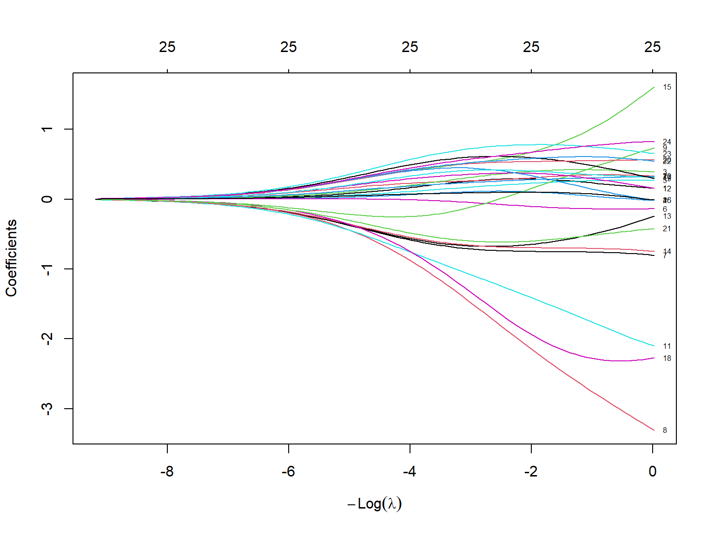
So, the y axis represents the value of the \(\beta\)’s from the model, and the x axis are the various values of \(\lambda\) for each specific value of \(\lambda\). As you see when \(\lambda\) is 0, the coefficients can be quite large, and as \(\lambda\) increase, the \(\beta\)’s converge to 0. This is nice, but we need to find a “best” value of \(\lambda\). This is done via cross-validation, typically.
s1<-cv.glmnet(x =x, y=y, family="gaussian", alpha = 0) #alpha = 0 for ridge regression
plot(s1)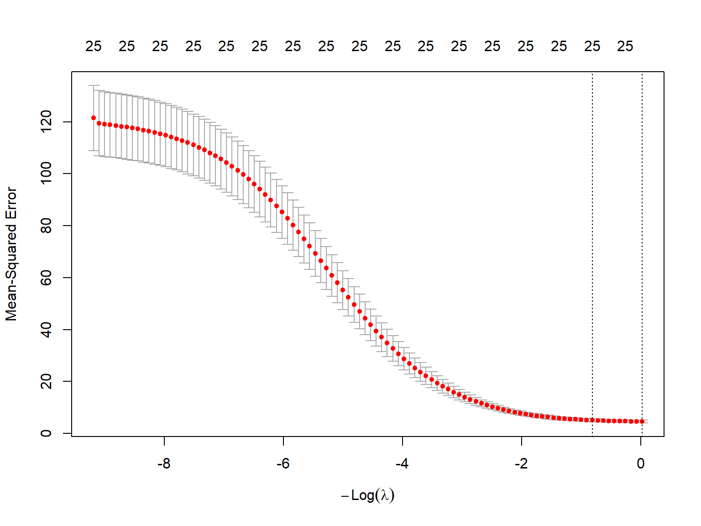
s1
Call: cv.glmnet(x = x, y = y, family = "gaussian", alpha = 0)
Measure: Mean-Squared Error
Lambda Index Measure SE Nonzero
min 0.9814 100 4.577 0.5354 25
1se 2.2671 91 5.061 0.6030 25The plot shows the mean square error for the model with a particular value of log(\(\lambda\)). The dotted lines represent the “best” value and the value of \(\lambda\) that is 1 standard error larger than the true minimum.
Why the two values? Well, the minimum value of \(\lambda\), in this case about -0.0187971, and the minimum + 1se is 0.8185066. The smaller value gives the simplest model, while the 1 se value gives the simplest model that also has high accuracy.
How do the coefficient compare?
options(scipen=999)
ridgemod2<-glmnet(x=x,y=y, alpha = 0, lambda = s1$lambda.min)
ridgemod2
Call: glmnet(x = x, y = y, alpha = 0, lambda = s1$lambda.min)
Df %Dev Lambda
1 25 97.04 0.9814ridgemod2$beta25 x 1 sparse Matrix of class "dgCMatrix"
s0
continentAsia 0.15807765
continentEurope 0.33585699
continentNorth America 0.39279981
continentOceania -0.01793908
continentSouth America 0.26849611
population. -0.13748129
cbr -0.83835880
cdr -3.31483642
rate.of.natural.increase 0.73184619
net.migration.rate 0.33072674
imr -2.09300632
womandlifetimeriskmaternaldeath 0.15054584
tfr -0.21669565
percpoplt15 -0.72669927
percpopgt65 1.61333958
percurban -0.01165688
percpopinurbangt750k 0.31278296
percpop1549hivaids2007 -2.27111264
percmarwomcontraall 0.29996193
percmarwomcontramodern 0.56182389
percppundernourished0204 -0.42160525
motorvehper1000pop0005 0.54290862
percpopwaccessimprovedwatersource 0.65449514
gnippppercapitausdollars 0.82429889
popdenspersqkm -0.01014136df1<-data.frame(names = names(coef(fm)) , beta=round(coef(fm),4), mod="gm")
df2<-data.frame(names = c(names(coef(fm)[1]), row.names(ridgemod2$beta)), beta=round(as.numeric(coef(s1, s = s1$lambda.min)),4), mod="ridge")
dfa<-rbind(df1, df2)
library(ggplot2)
dfa%>%
ggplot()+geom_point(aes(y=beta,x=names, color=mod))+theme_minimal()+theme(axis.text.x = element_text(angle = 45, vjust = 0.5, hjust=1))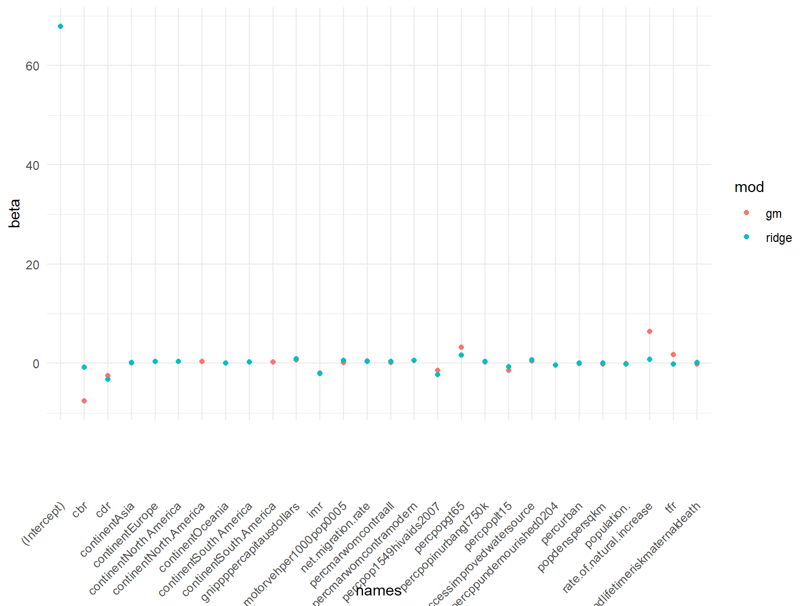
An important note about the ridge regression is that no coefficients are forced to zero, so it is not doing variable selection, only shrinkage of the coefficients. The Lasso, on the other hand can do both.
4.3 Lasso
knitr::include_graphics("predictive_workinggroup/images/cowboy.jpeg")What is the Lasso? Lasso is short for least absolute shrinkage and selection operator. It is designed so that it produces a model that is both strong in the prediction sense, and parsimonious, in that it performs feature (variable) selection as well.
The Lasso is similar to the ridge regression model, in that it penalizes the regression parameter solution, except that the penalty term is not the sum of squared \(\beta\)’s, but the sum of the absolute values of the \(\beta\)’s.
\[ \text{Deviance} + \lambda \sum_k | \beta_k| \]
ridgemod3<-glmnet(x=x,y=y, alpha = 1) #alpha = 1 for Lasso
plot(ridgemod3, label = T, xvar = "lambda")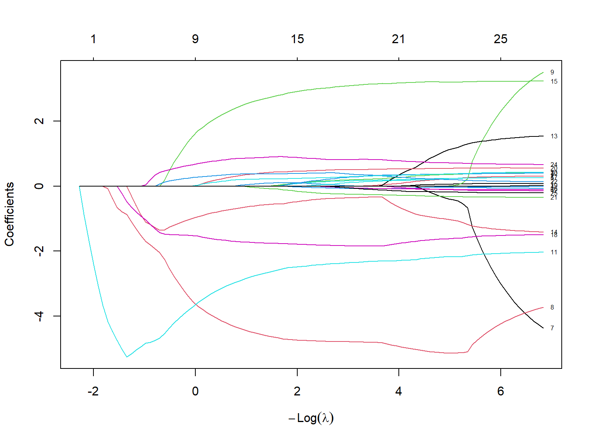
s2<-cv.glmnet(x =x, y=y, family="gaussian", alpha = 1) #alpha = 1 for Lasso
plot(s2)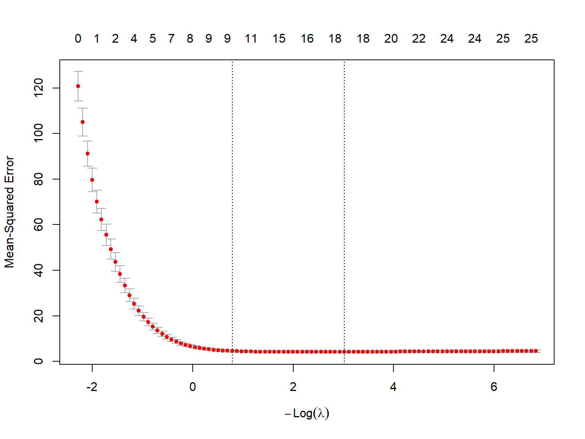
s2
Call: cv.glmnet(x = x, y = y, family = "gaussian", alpha = 1)
Measure: Mean-Squared Error
Lambda Index Measure SE Nonzero
min 0.0488 58 4.150 0.4524 18
1se 0.4555 34 4.555 0.4377 10test<-glmnet(x =x, y=y, family="gaussian", alpha = 1, lambda = s2$lambda.1se)
test
Call: glmnet(x = x, y = y, family = "gaussian", alpha = 1, lambda = s2$lambda.1se)
Df %Dev Lambda
1 10 96.77 0.4555print(test$beta)25 x 1 sparse Matrix of class "dgCMatrix"
s0
continentAsia .
continentEurope .
continentNorth America .
continentOceania .
continentSouth America .
population. .
cbr .
cdr -4.312756495
rate.of.natural.increase .
net.migration.rate .
imr -2.965109528
womandlifetimeriskmaternaldeath .
tfr .
percpoplt15 -0.688669527
percpopgt65 2.380271835
percurban 0.005859655
percpopinurbangt750k .
percpop1549hivaids2007 -1.702327240
percmarwomcontraall .
percmarwomcontramodern 0.302021249
percppundernourished0204 .
motorvehper1000pop0005 0.361563315
percpopwaccessimprovedwatersource 0.198479579
gnippppercapitausdollars 0.850286408
popdenspersqkm . 4.4 Elastic net
A third method, the Elastic net regression, blends the shrinkage aspects of the ridge regression with the feature selection of the Lasso. This was proposed by Zou and Hastie 2005
\[\text{Deviance} + \lambda [(1-\alpha) \sum_k |\beta_k| + \alpha \sum_k \beta_k^2]\]
ridgemod4<-glmnet(x=x,y=y, alpha = .5, nlambda = 100) #alpha = .5 for elastic net
plot(ridgemod4, label = T, xvar = "lambda")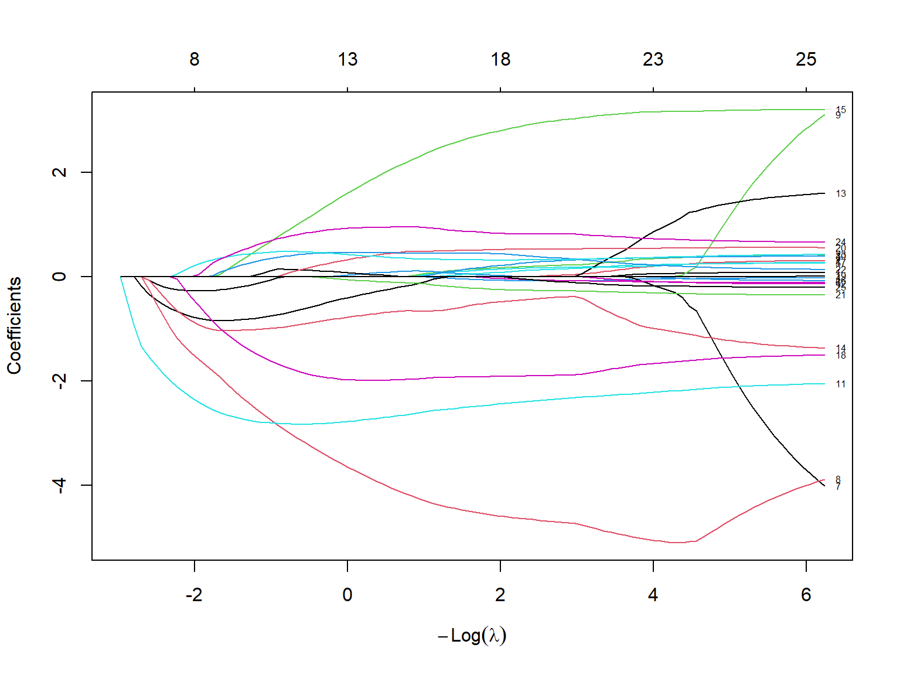
s3<-cv.glmnet(x =x, y=y, family="gaussian", alpha = .5) #alpha = .5 for elastic net
plot(s3)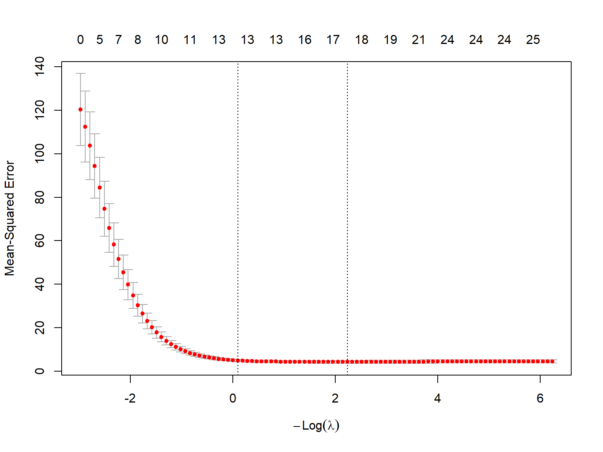
s3
Call: cv.glmnet(x = x, y = y, family = "gaussian", alpha = 0.5)
Measure: Mean-Squared Error
Lambda Index Measure SE Nonzero
min 0.1072 57 4.245 0.6584 18
1se 0.9110 34 4.879 0.5374 13test3<-glmnet(x =x, y=y, family="gaussian", alpha = .5, lambda = s3$lambda.1se)
test3$beta25 x 1 sparse Matrix of class "dgCMatrix"
s0
continentAsia .
continentEurope .
continentNorth America .
continentOceania .
continentSouth America .
population. .
cbr -0.36177552
cdr -3.72113824
rate.of.natural.increase .
net.migration.rate .
imr -2.76175116
womandlifetimeriskmaternaldeath .
tfr .
percpoplt15 -0.77030251
percpopgt65 1.68395437
percurban 0.04743006
percpopinurbangt750k .
percpop1549hivaids2007 -1.97621067
percmarwomcontraall 0.06386938
percmarwomcontramodern 0.35584441
percppundernourished0204 -0.06686951
motorvehper1000pop0005 0.46120833
percpopwaccessimprovedwatersource 0.41341185
gnippppercapitausdollars 0.93116534
popdenspersqkm . In these examples, we will use the Demographic and Health Survey Model Data. These are based on the DHS survey, but are publicly available and are used to practice using the DHS data sets, but don’t represent a real country.
In this example, we will use the outcome of contraceptive choice (modern vs other/none) as our outcome. An excellent guide for this type of literature is this article
library(haven)
dat<-url("https://github.com/coreysparks/data/blob/master/ZZIR62FL.DTA?raw=true")
model.dat<-read_dta(dat)Here we recode some of our variables and limit our data to those women who are not currently pregnant and who are sexually active.
library(dplyr)
model.dat2<-model.dat%>%
mutate(region = v024,
modcontra= ifelse(v364 ==1,1, 0),
age = cut(v012, breaks = 5),
livchildren=v218,
educ = v106,
currpreg=v213,
wealth = as.factor(v190),
partnered = ifelse(v701<=1, 0, 1),
work = ifelse(v731%in%c(0,1), 0, 1),
knowmodern=ifelse(v301==3, 1, 0),
age2=v012^2,
rural = ifelse(v025==2, 1,0),
wantmore = ifelse(v605%in%c(1,2), 1, 0))%>%
filter(currpreg==0, v536>0, v701!=9)%>% #notpreg, sex active
dplyr::select(caseid, region, modcontra,age, age2,livchildren, educ, knowmodern, rural, wantmore, partnered,wealth, work)knitr::kable(head(model.dat2))| caseid | region | modcontra | age | age2 | livchildren | educ | knowmodern | rural | wantmore | partnered | wealth | work |
|---|---|---|---|---|---|---|---|---|---|---|---|---|
| 1 1 2 | 2 | 0 | (28.6,35.4] | 900 | 4 | 0 | 1 | 1 | 1 | 0 | 1 | 1 |
| 1 4 2 | 2 | 0 | (35.4,42.2] | 1764 | 2 | 0 | 1 | 1 | 0 | 0 | 3 | 1 |
| 1 4 3 | 2 | 0 | (21.8,28.6] | 625 | 3 | 1 | 1 | 1 | 0 | 0 | 3 | 1 |
| 1 5 1 | 2 | 0 | (21.8,28.6] | 625 | 2 | 2 | 1 | 1 | 1 | 0 | 2 | 1 |
| 1 6 2 | 2 | 0 | (35.4,42.2] | 1369 | 2 | 0 | 1 | 1 | 1 | 0 | 3 | 1 |
| 1 7 2 | 2 | 0 | (15,21.8] | 441 | 1 | 0 | 1 | 1 | 1 | 0 | 1 | 1 |
library(caret)Loading required package: latticeset.seed(1115)
train<- createDataPartition(y = model.dat2$modcontra , p = .80, list=F)
dtrain<-model.dat2[train,]
dtest<-model.dat2[-train,]4.5 Logistic regression
library(glmnet)
library(MASS)
fm<-glm(modcontra~region+factor(age)+livchildren+wantmore+rural+factor(educ)+partnered+work+wealth, data = dtrain, family=binomial)
summary(fm)
Call:
glm(formula = modcontra ~ region + factor(age) + livchildren +
wantmore + rural + factor(educ) + partnered + work + wealth,
family = binomial, data = dtrain)
Coefficients:
Estimate Std. Error z value Pr(>|z|)
(Intercept) -2.80866 0.26506 -10.596 < 0.0000000000000002 ***
region 0.15475 0.03772 4.103 0.000040825388 ***
factor(age)(21.8,28.6] 0.44413 0.18439 2.409 0.01601 *
factor(age)(28.6,35.4] 0.54804 0.19226 2.850 0.00437 **
factor(age)(35.4,42.2] 0.14667 0.20988 0.699 0.48468
factor(age)(42.2,49] -0.63063 0.23623 -2.670 0.00760 **
livchildren 0.18805 0.02976 6.318 0.000000000264 ***
wantmore -0.16630 0.10204 -1.630 0.10316
rural -0.62567 0.11323 -5.525 0.000000032859 ***
factor(educ)1 0.30769 0.13045 2.359 0.01834 *
factor(educ)2 0.59775 0.13288 4.498 0.000006849378 ***
factor(educ)3 0.62670 0.24653 2.542 0.01102 *
partnered 0.28746 0.10467 2.746 0.00603 **
work 0.16342 0.10386 1.573 0.11561
wealth2 0.13635 0.14047 0.971 0.33170
wealth3 0.17350 0.14114 1.229 0.21898
wealth4 0.24257 0.15013 1.616 0.10614
wealth5 0.17383 0.18138 0.958 0.33786
---
Signif. codes: 0 '***' 0.001 '**' 0.01 '*' 0.05 '.' 0.1 ' ' 1
(Dispersion parameter for binomial family taken to be 1)
Null deviance: 3818.3 on 4128 degrees of freedom
Residual deviance: 3536.4 on 4111 degrees of freedom
AIC: 3572.4
Number of Fisher Scoring iterations: 54.6 stepwise logistic
smod<-fm%>%
stepAIC(trace = T, direction = "both")Start: AIC=3572.39
modcontra ~ region + factor(age) + livchildren + wantmore + rural +
factor(educ) + partnered + work + wealth
Df Deviance AIC
- wealth 4 3539.2 3567.2
<none> 3536.4 3572.4
- work 1 3538.9 3572.9
- wantmore 1 3539.0 3573.0
- partnered 1 3543.8 3577.8
- region 1 3553.0 3587.0
- factor(educ) 3 3559.4 3589.4
- rural 1 3566.7 3600.7
- livchildren 1 3577.1 3611.1
- factor(age) 4 3609.4 3637.4
Step: AIC=3567.21
modcontra ~ region + factor(age) + livchildren + wantmore + rural +
factor(educ) + partnered + work
Df Deviance AIC
<none> 3539.2 3567.2
- work 1 3541.7 3567.7
- wantmore 1 3541.8 3567.8
+ wealth 4 3536.4 3572.4
- partnered 1 3547.9 3573.9
- region 1 3555.0 3581.0
- factor(educ) 3 3564.0 3586.0
- livchildren 1 3579.4 3605.4
- rural 1 3590.0 3616.0
- factor(age) 4 3611.8 3631.8coef(smod) (Intercept) region factor(age)(21.8,28.6]
-2.6270672 0.1501583 0.4524232
factor(age)(28.6,35.4] factor(age)(35.4,42.2] factor(age)(42.2,49]
0.5612389 0.1621533 -0.6103720
livchildren wantmore rural
0.1861566 -0.1651203 -0.6915328
factor(educ)1 factor(educ)2 factor(educ)3
0.3178917 0.6052986 0.6167321
partnered work
0.3043424 0.1621220 4.6.1 Best subset regression
y<-dtrain$modcontra
x<-model.matrix(~factor(region)+factor(age)+livchildren+rural+wantmore+factor(educ)+partnered+work+factor(wealth), data=dtrain)
x<-(x)[,-1]
yx<-as.data.frame(cbind(x[,-1],y))
names(yx) [1] "factor(region)3" "factor(region)4" "factor(age)(21.8,28.6]"
[4] "factor(age)(28.6,35.4]" "factor(age)(35.4,42.2]" "factor(age)(42.2,49]"
[7] "livchildren" "rural" "wantmore"
[10] "factor(educ)1" "factor(educ)2" "factor(educ)3"
[13] "partnered" "work" "factor(wealth)2"
[16] "factor(wealth)3" "factor(wealth)4" "factor(wealth)5"
[19] "y" #names(yx)<-c(paste("X",1:13, sep=""),"y")library(bestglm)
b1<-bestglm(yx, family=binomial)
b1$BestModels
summary(b1$BestModel)4.7 Logistic ridge regression
s1<-cv.glmnet(x = x,y = y, data = dtrain, family="binomial", alpha = 0)
plot(s1)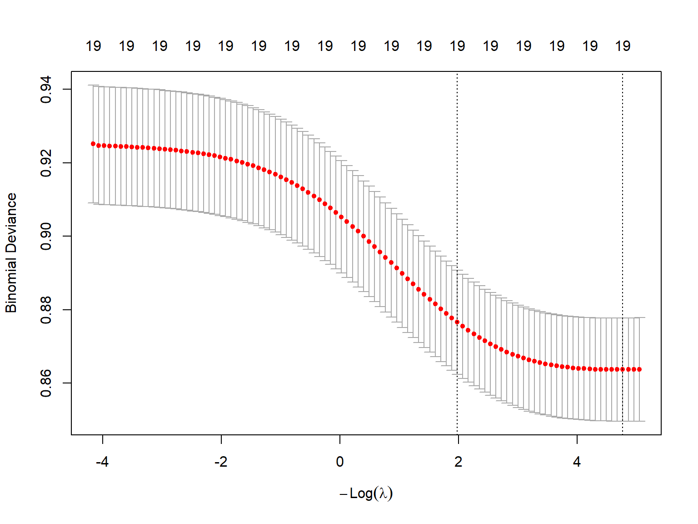
rmod<-glmnet(x,y, data = dtrain, family="binomial", alpha = 0)
plot(rmod)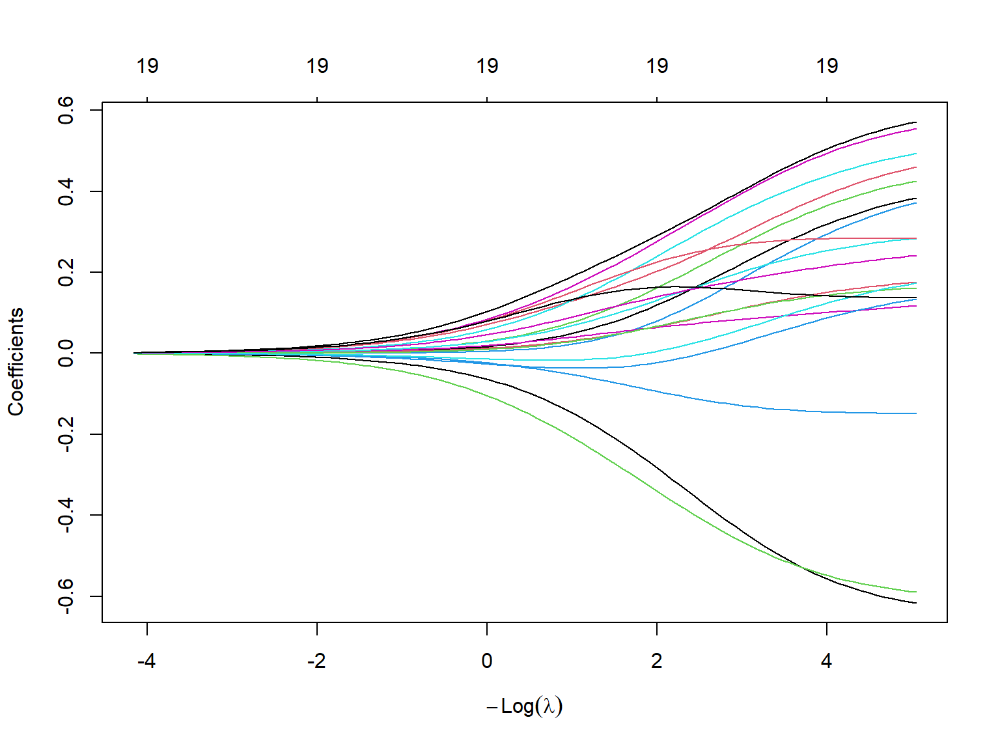
rmod1<-glmnet(x,y, data = dtrain, family="binomial", alpha = 0, lambda = s1$lambda.1se)
rmod1$beta19 x 1 sparse Matrix of class "dgCMatrix"
s0
factor(region)2 0.11736906
factor(region)3 0.20097363
factor(region)4 0.15952400
factor(age)(21.8,28.6] 0.07831211
factor(age)(28.6,35.4] 0.23721169
factor(age)(35.4,42.2] 0.06382724
factor(age)(42.2,49] -0.27968879
livchildren 0.06545045
rural -0.33722253
wantmore -0.09296988
factor(educ)1 0.13004018
factor(educ)2 0.27349312
factor(educ)3 0.28825836
partnered 0.22401406
work 0.06631462
factor(wealth)2 -0.02330795
factor(wealth)3 0.00422731
factor(wealth)4 0.13902383
factor(wealth)5 0.162852454.8 Logistic Lasso
s2<-cv.glmnet(x = x,y = y, data = dtrain, family="binomial", alpha = 1)
plot(s2)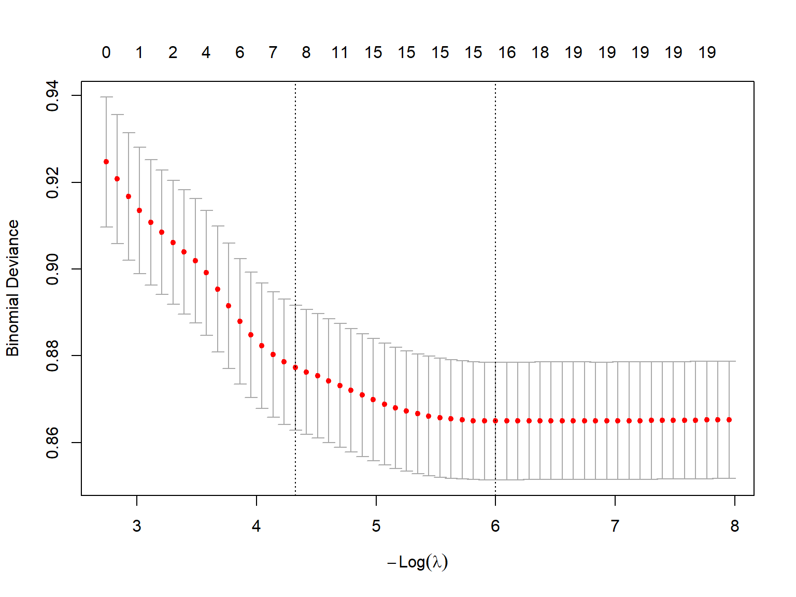
rmod2<-glmnet(x,y, data = dtrain, family="binomial", alpha = 1)
plot(rmod2)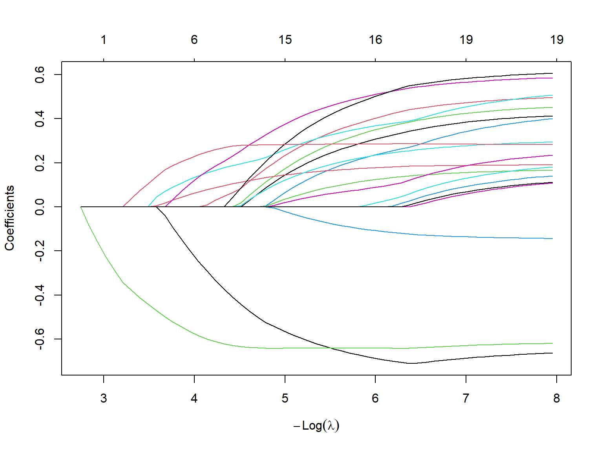
rmod3<-glmnet(x,y, data = dtrain, family="binomial", alpha = 1, lambda = s2$lambda.1se)
rmod3$beta19 x 1 sparse Matrix of class "dgCMatrix"
s0
factor(region)2 .
factor(region)3 0.04882613
factor(region)4 .
factor(age)(21.8,28.6] .
factor(age)(28.6,35.4] 0.17720355
factor(age)(35.4,42.2] .
factor(age)(42.2,49] -0.37140425
livchildren 0.09635800
rural -0.62095437
wantmore .
factor(educ)1 .
factor(educ)2 0.20666302
factor(educ)3 .
partnered 0.26927535
work .
factor(wealth)2 .
factor(wealth)3 .
factor(wealth)4 .
factor(wealth)5 . 4.9 classification results
source("model_metrics.R")4.9.1 Regular GLM
probabilities <- fm %>% predict(dtest, type = "response")
predicted.classes <- ifelse(probabilities > mean(dtest$modcontra, na.rm=T), 1, 0)
observed.classes <- dtest$modcontra
conf_table <- table(predicted.classes, observed.classes)
classify_metrics(conf_table) Accuracy Sensitivity Specificity Precision F1_Score
1 0.689 0.4885 0.7423 0.3354 0.39774.9.2 stepwise logistic model
probabilities <- predict(smod, dtest, type = "response")
predicted.classes <- ifelse(probabilities > mean(dtest$modcontra, na.rm=T), 1, 0)
observed.classes <- dtest$modcontra
conf_table <- table(predicted.classes, observed.classes)
classify_metrics(conf_table) Accuracy Sensitivity Specificity Precision F1_Score
1 0.686 0.4747 0.7423 0.3291 0.38874.9.3 Logistic ridge regression
x.test <- model.matrix(~factor(region)+factor(age)+livchildren+rural+wantmore+factor(educ)+partnered+work+factor(wealth), data=dtest)
x.test<-(x.test)[,-1]
probabilities <- predict(object=rmod1, newx = x.test, s=s1$lambda.1se, type="response")
predicted.classes <- ifelse(probabilities > mean(dtest$modcontra), 1,0)
observed.classes <- dtest$modcontra
conf_table <- table(predicted.classes, observed.classes)
classify_metrics(conf_table) Accuracy Sensitivity Specificity Precision F1_Score
1 0.7132 0.4147 0.7926 0.3475 0.37824.9.4 Logistic Lasso
probabilities <- predict(object=rmod3, newx = x.test, s=s2$lambda.1se, type="response")
predicted.classes <- ifelse(probabilities > mean(dtest$modcontra), 1,0)
observed.classes <- dtest$modcontra
conf_table <- table(predicted.classes, observed.classes)
classify_metrics(conf_table) Accuracy Sensitivity Specificity Precision F1_Score
1 0.688 0.4562 0.7497 0.3267 0.38084.9.5 So what?
By doing any type of regression variable selection, you are going to have the computer tell you what variables are going into your models. A lot of people don’t like this, but it is very common in the applied world in order to build the best models, especially in high-dimensional data.
Take aways
- These methods will lead to more parsimonious models with better predictive power
- The models are sensitive to their tuning parameters, so please don’t jump into this without tuning the model parameters.